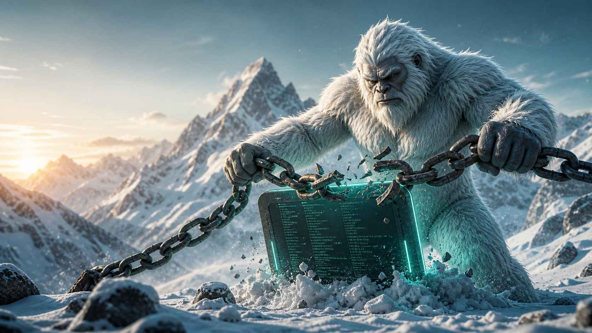
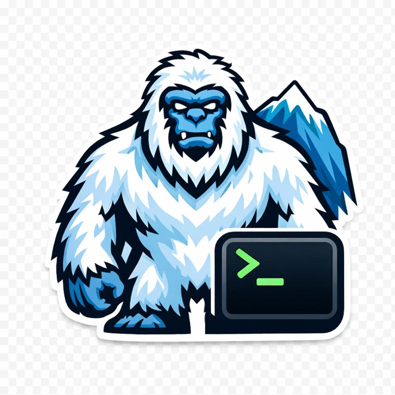

back to the hub — PNG and JPEG sources from the repo's committed assets, exercising intrinsic, attribute and CSS sizing.


A floated image reserves its rectangle and the paragraph wraps along its edge. The engine decodes each source once into the shared loader cache, so revisiting this page re-uses both the bytes and the decoded pixels; the GPU samples the original resolution into whatever box the layout assigns, which keeps downscaled logos crisp.